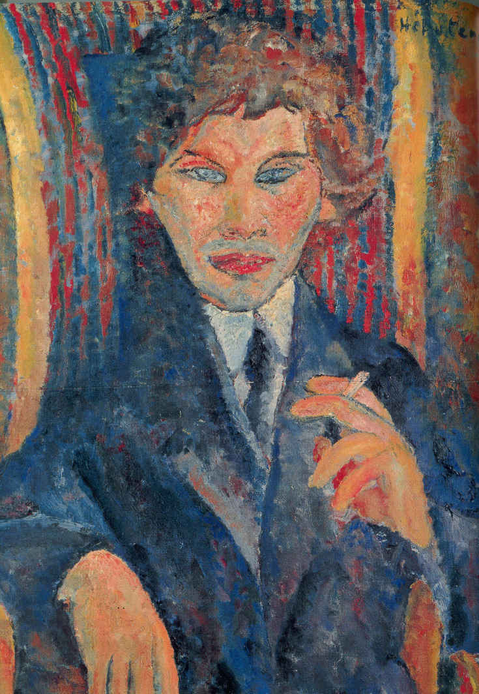
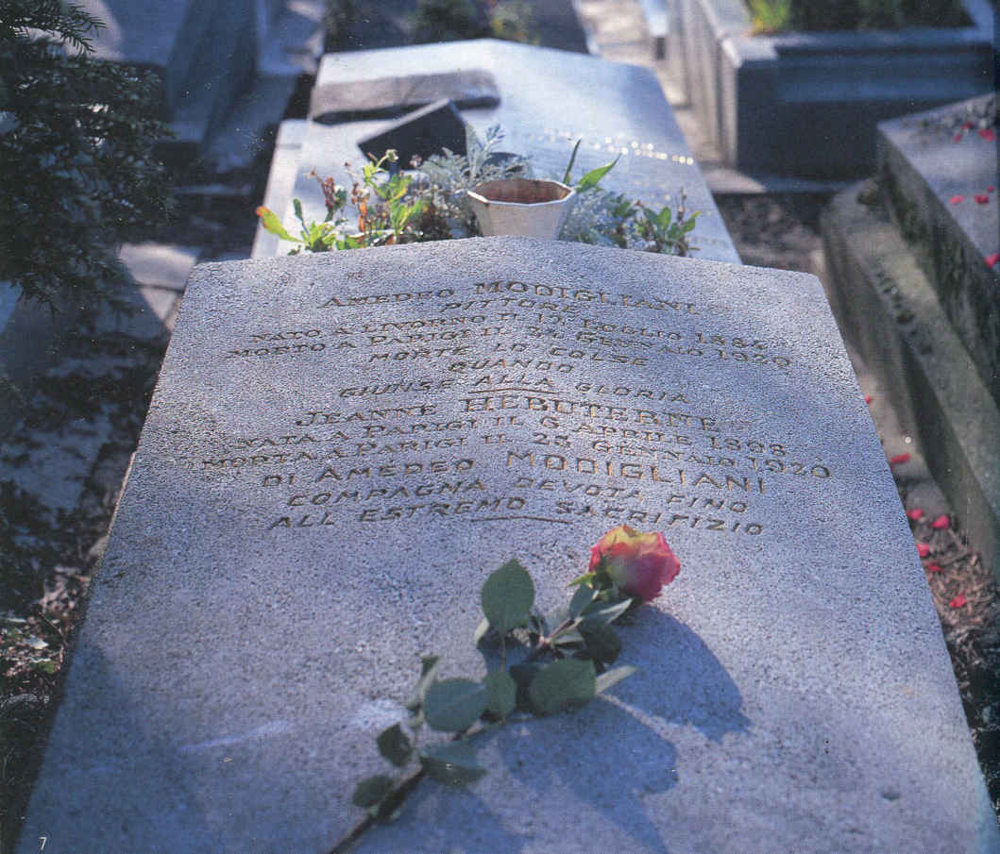

| 『モディリアニの妻』と言う名の画家（動画付き）: 天国にかける二つの橋 アーティストラブ | |
| 角間貴生 | |
| (2018) | |
『モディリアニの妻』と言う名の画家
（天国にかけた二つの橋）
アーティストラブ７
角間貴生（かくまたかお）
出版工房ゆめらいふ
まえがき
画家モディリアニが死んだ翌日の早朝、妻ジャンヌがパリ・アミオ街のアパルトマンの窓から身を投げた。享年２１歳。妊娠８か月の身重だった。
良家の娘でもあるジャンヌがユダヤ人の「女たらし画家」にすべての愛を捧げ、そして天国まで後を追っていった。
形だけ見れば確かにその通りなのだが、それははただ単なる盲目の愛でもなかった。
彼女はモディリアニによって「愛する事」「生きる事」の意味を知ったからこそ自ら命を絶ったのだ。
彼女はキラキラした青い眼が印象的な、繊細で純粋で美しい女性だった。
そしてなかなか良い絵を描く画家でもあった。
これは「モディリアニ伝説」に隠れて語られる事のない、画家ジャンヌを主人公にして書かれた小説です。
１子供の頃のジャンヌは...
彼女の名前はジャンヌ・エビュテルヌ。
正式の婚姻届は出されていませんでしたが、彼女はアメデオの妻...そうです。画家アメデオ・モディリアニの妻でした。
１９２０年１月２２日、モディリアニは病状が悪化して入院、同２４日夜８時５０分に息をひきとりました。そして同２５日の未明、ジャンヌが彼の後を追って実家のアパートの六階から身を投げました。アメデオ・モディリアニ享年３５歳、ジャンヌ・エビュテルヌ享年２１歳。
すべてのモディリアニ神話はこの時から始まったのです。
モディリアニとジャンヌの全く関わり知らない世界で...。
ジャンヌは１８９８年、パリのアミオ街８番地の高級アパルトマンに生まれました。
彼女の父アーシルは大きな香水商店の主任会計士で立派な髭をはやしていました。
とても文学好きで、ジャンヌが子供の頃、妻や子供たちに３世紀のギリシアの哲学者プロティヌスの「エンネアデス」の一節を聞かせたりしました。
「神すなわち美を見たきものは自らを神に似た美しきものにしなければならない」と朗唱するのでした。
パスカルの「パンセ」の一節を朗唱したりする事もありました。
言ってみれば、いつも観念的な詩を愛読するような書斎人でした。
そしてみずから進んでローマカトリック教会のお世話をする、敬虔なカトリック信者だったのです。
母ユードクシは小さい頃から絵が好きだったようで、若い時は画家を志した事もあったようです。
しかし、結婚後は画家の夢も捨てて、夫に従いカトリックを理解しようと努めました。
そして、子供たちへの教育にすべての情熱を傾けた人でした。
兄アンドレの美学校進学を実現するために大変な努力を払いましたし、ジャンヌにはヴァイオリンを習わせたのでした。
しかし、父母二人とも考え方が古風で子供たちに何かと口うるさい事ではよく似ていました。
四歳年の離れた兄アンドレとジャンヌはいつも大の仲良しでした。
ジャンヌはいつもアンドレの後を追いかけまわり、アンドレの真似ばかりしている女の子だったようです。
アンドレは勉強のできる優等生でしたが、絵が大好きで美術大学に進学してアカデミックな風景画家になりました。
そして、父親と同じように熱心なカトリック教徒でもありました。
このようにジャンヌの家庭は敬虔なカトリックの、そして、しつけに厳しいブルジョア家庭だったと言って良いでしょう。
そんな穏やかな家庭の中でジャンヌは両親や兄の愛を一身に浴びて育ったのです。
彼女のヴァイオリンはみるみる上達して１５歳のころにはプロ級の腕前でした。
特にバッハを演奏するのが大好きで、一時はヴァイオリン演奏者になるのを夢見たこともありました。
一方、幼いころから絵を描くことも大好きだったようで、これは兄アンドレの影響があったのかもしれません。
いつも兄の真似をしてお絵かき遊びをしている子供でしたから...。
ジャンヌはこのように家の中ではヴァイオリンを弾いたり、絵を描いたり、本を読んだりして過ごす女の子でした。
が、いつの頃からか自分の内面を表現するには、音楽より絵の方が向いていると思うようになっていました。
ところで、ジャンヌは子供の頃、周りから「赤インゲン」という綽名で呼ばれる、いじめられっ子でした。
髪が赤みを帯びた栗色でいつも束ねて髷を結っていたからです。
もう一つ「ココナッツ」と呼ばれていじめられることもありました。
やはりジャンヌの髪が栗色で顔色が青白かったからです。
ジャンヌがいじめられっ子になったのは、小柄で内気でおとなしく、おまけにいつも夢見がちで周囲の子供たちと協調できない女の子だったからのようです。
でも、彼女はたしかに臆病ではありましたが、内心は負けず嫌いで粘り強い性格でもありました。
いじめられればいじめられるほど、逆に自分の心の世界が広がっていくのでした。
こうして、彼女は次第に家の中に閉じこもって、内面に浮かぶものを空想して絵に描くような少女になっていったのです。
兄がジャンヌを気遣って「外に出て一緒に風景でも写生しよう」と言っても、彼女は自分の心の中のイメージを描き留める方が楽しかったのです。
彼女が１５歳になった時には、将来、画家になる決心を固めていたようでした。
しかし、兄のようなアカデミックな絵のコースでなくて、現代アートの画家か絵本画家の道でした。
彼女は心密かに画家になるための準備を始めていたのでした。
ところで、ジャンヌはいつもいじめられっ子としての被害妄想を膨らませてきたからなのでしょうか？
思春期の頃から、何故か暗い内容の小説や怖い絵本なんかを好むようになっていました。
本の中に登場する不幸な少女に自分自身を重ね合わせて読むようなこともありました。
ある日、ネール・ドラの自伝小説『飢餓と悲嘆の日々』を読みました。
貧しい姉妹のために売春を強いられる、悲しい少女の物語でした。
読んでいるうちに、この物語の挿絵を自分流に描いてみようと思いました。
ジャンヌはすらすらと物語の挿絵が描けたのです。
...私は窓辺でひじをつきながら雪景色を眺めていました...
...母が座ると、スカートが周りに広がり、私たちは母の膝枕で眠りました...
...私は道行く人々を眺めるために、街路より下の石段に腰かけていました...
...助任司祭が自分の法衣の後ろに白い巻紙を隠してやってきました...
..............................
延々と「私」の身の回りで起こる事柄が語られていきます。
そして最後はこんな風に締められます。
...大きな音を立てて扉が開いた瞬間、クラーシェの腕を掴んで一人の男が部屋に入ってきました...
...私はひとりうずくまりました。ベッドとして私にあてがわれたソファが腹立たしく嘆くのでした...
（『モディリアーニの恋人』橋本治、宮下規久朗 新潮社）
そんなお話の挿絵をジャンヌは夢中になって描きました。
彼女は自分の絵が結構気に入ったのでした。
..............................
ある日、ジャンヌの兄アンドレのもとに徴兵令状が届きました。
幼いころからいつも一緒だった兄が戦地に赴かねばならないのです。
ジャンヌはその日の兄の姿をスケッチしました。
兄は脚を組んで険しい顔をして座っていました。
そして徴兵書類を何度も何度も読み返していました。
ジャンヌはそのスケッチを大切に自分の机の中に入れました。
やがて兄は第一次大戦に出征して行きました。
ジャンヌの心はぽっかり穴が開いたような空虚感に包まれました。
子供の頃、周りからいじめられて泣いて帰った時に、いつも優しく励ましてくれた兄でした。
この大切な人が、突如、ジャンヌの前からいなくなったのです。
愛する兄が去ってからは、ジャンヌの心はますます内向的になっていくようでした。
さらに日々、怖い小説を読むことも多くなりました。
彼女のイメージ世界はますます暗い幻想に彩られていったのです。
いつの頃からか、思春期特有の死の幻想みたいなものにとりつかれるようになっていたのです。
ジャンヌが絵を描くと、そこに塗り込められた色は深く沈んだ色になりました。
彼女が描く赤色は血の色のようになり、黒色は不吉な闇の色にも見えました。
いつの間にか、ジャンヌは心の中で絶えず「死」のイメージをあこがれる妄想少女になっていたのです。
ところが、そんなネガティヴだらけのジャンヌを積極的な夢へと突き進ませる、一大事件が起きたのです。
アメデオ・モディリアニとの出会いでした。
それはジャンヌの燃え上がるような恋でした。
いつも自殺ばかり心に思い描いていた彼女が突然「愛に生きる」道へと向かったのです。
父も母も兄もすべてを捨てて、ジャンヌはモディリアニのもとへ突っ走ったのです。
彼女の命を賭けた恋でした。
ジャンヌ・エビュテルヌは不死鳥のように蘇ったのです。
２モディリアニに恋をした
１９１６年の１２月の暮れ、通っているアカデミー・コロラッシのデッサン室で、ジャンヌはいつものように三脚を立てて裸婦デッサンをしていました。
すると、いきなり後ろから男が声をかけたのです。
「なかなか良いじゃない。上手くカタチを捉えていてすごいよ」
びっくりして後ろを振り向くと、端正な顔立ちの男がそこに立っていたのです。
コール天の上着を着て、赤いスカーフを首に巻いた男でした。
直ぐに、あのモディリアニだとわかりました。
「えっ... あ、あなた、モディリアニさんでしょう？」
「うん、そうさ。君の名前は何と言うのかい？ なかなか良い絵じゃないか」
「私はジャンヌ・エビュテルヌと言います」
「へー、ジャンヌと言うのか。君をスケッチしていいかい？」
「ええ、もちろんですとも」
モディリアニは紙とペンを取り出して、しばらくジャンヌの顔を見つめていたかと思うと、サラサラと一気に描き上げました。
最後にそのスケッチに「ジャンヌへ」と書き入れて日付も付け加えました。
あっという間の一筆描きでした。
渡されたスケッチを見ると、深編み帽を眉のところまで被って、両側に長い三つ編みを垂らした、首の長い彼女がものの見事に描かれていたのです。
ジャンヌは感嘆したのでした。
これがジャンヌのモディリアニとの初めての出会いでした。
初めてモディリアニに出会ったこの時から、ジャンヌは彼の虜になってしまったのです。
モディリアニの方でもまた、ジャンヌの子供っぽい無邪気な振る舞いに不可解な魅力を感じたのかもしれません。
その日からジャンヌとモディリアニは頻繁に会うことになったのです。
モディリアニの方では、これまで付き合ってきた女性たちがどれも押しが強くて手ごわい女が多かったのに対し、ジャンヌが内気で小柄で純粋...おまけにとても良い絵を描くという事で、すぐに気に入ったようでした。
ジャンヌのようにおとなしく芯の強そうな女の子は、芸術家仲間では扱いが難しくて、かえって人気がないようだったのです。
だから、二人は誰にも知られないような場所でいつも密かに会う事が出来たのでした。
じつのところ、ジャンヌは前々からモディリアニの悪い噂は聞いていました。
大の女たらしで、ここ二年ぐらい文筆家ベアトリス・ヘイスティングスと同棲していて、最近、エキセントリックで気まぐれな彼女と激しい喧嘩別れをしたことなど、モディリアニにまつわる悪い噂はたくさん耳にしていました。
でも、それほど魅力的でハンサムな画家ならぜひ会ってみたい...ともジャンヌは前々から思っていたのでした。
いつも閉じこもった敬虔な家庭にうんざりしている、彼女のちょっとした冒険心でした。
しかし、実際に会ったモディリアニは世間で噂される「女たらし」なんかとは全く違いました。
繊細で優しい内面を持った顔立ち、その暗く翳のある眼には激しい輝きがありました。
時々、ダンテの詞なんか滔々と朗唱したりするモディリアニは素敵でした。
「ぼくは幼い時からしょっちゅう、母親からこんな詞を朗唱されて育ったものだから、こんなフレーズが身体の中に入ってしまっているのだよ」
「うちでは父親がよくダンテを朗唱したりしていたわ。だけど、その後はいつも理屈っぽい話をやるので私は閉口したわ」
「君のお父さんはイタリアびいきだったのかな？」
「いや、イタリアびいきじゃなくて、ただカトリックびいきだっただけよ」
「ちょっと、難しそうなお父さんかもなあ」
「そうよ、だから私はそこを飛び出したいのよ...」
「君は顔が小さくて、髪が長く、唇がぽっちゃりしていて、とてもセクシーだね」と言って、とても情熱的なキッスをしてくれるのでした。
ジャンヌはもう、自殺にばかりあこがれていたあの妄想少女とは全くの別人に変わっていたのです。
ある日、彼女はモディリアニの描く人物画を見せてもらう事が出来ました。
面長の顔、ほっそりと長く伸びる肢体...ジャンヌがいつも描く人物像と少し似ていると思うと、モディリアニにさらに親近感を覚えました。
ただ、スタイルは似ていましたが、ジャンヌの描く人物像とは根本的に違う事も思い知らされたのです。
彼女の絵が単に人物のイラストレーションだったのに対し、モディリアニの絵は的確にその人物の「人間そのもの」...その内面までがえぐり出されていることでした。
人間の中身を見抜いて、それを自分のカタチに的確に置き換えてしまう...そんなモディリアニの描写力にジャンヌはあらためて驚嘆したのです。
「この人は間違いなく天才だわ！」
彼女はモディリアニの芸術を、そして彼の人間自身を崇拝したのでした。
いよいよジャンヌがモディリアニと一緒に住むことを決意する日が来ました。
１９１７年の春、謝肉祭の日、ジャンヌは朝からおめかしに余念がありませんでした。
赤いバンダナをおでこに巻き、太く巻いた三つ編みの長い髪を頬の両側に垂らし、自分で仕立てたロシア風のドレスを着て、長いスカート、長いブーツを履いての精一杯のおしゃれでした。
昨年の暮れに出会ったモディリアニと自分が一緒に住むことになると、胸をときめかせていたのです。
仮装舞踏会のあと、二人は同棲することになったのでした。
しかし、ジャンヌがモディリアニと一緒になることを、父も母も絶対に許しませんでした。
今は戦地にいて、ジャンヌが信頼してやまない兄のアンドレでさえそうでした。
１４歳も年上で、自分一人の生活も支えられない貧乏絵描き、大酒飲みの女たらし...そのくせ病気持ちの虚弱な身体、おまけになんと...ユダヤ人！
そんな男と一緒になることなど、とうてい家族の理解が得られる訳がありませんでした。
しかし、周囲からどんなに説教されてもジャンヌは頑固でした。
絶対に自分の意志を曲げることはなかったのです。
ジャンヌは堅実で面白みのない...そんなブルジョワ家庭から一刻も早く逃げ出したかったのです。
とうとう父は完全にジャンヌの事をあきらめたようでした。
いや、傍観を装い彼女を見捨てたのでした。
母とアンドレだけはその後も彼女のことを心配し続けることになりました。
..............................
３「しあわせ」が始まった
ジャンヌとモディリアニはモンパルナス界隈の安アパートで一緒に暮らし始めました。
モディリアニの荒んだ生活がこれを機会に少しでも改善されるのでは...と、画商のレオポルド・ズボロフスキーが二人のために借りてくれた部屋でした。
ズボロフスキーはポーランドの貴族末裔で教養豊かな詩人でもありました。
全く商売人らしくない画商で、周囲の画商仲間からは素人画商とからかわれ、自分の画廊さえ持つ事が出来ず、自宅で仕事をしている人でした。
しかし、初めてモディリアニの絵を見た時から彼の才能に惚れ込み、彼を売り出すのにすべてを賭けようと決意した人だったのです。
彼にとって、それが人生の夢になったのです。
ズボロフスキーは好きな煙草もやめ、妻のハンナさんと二人で封書の宛名書きアルバイトまでしてお金を作り、モディリアニに一日１５フランの日当まで渡す約束をしたのでした。
さらに、夫婦はモディリアニたち二人のアパートだけでなく、モデルの調達やら様々な世話をして、何とかしてモディリアニを制作へと駆り立てようと努力したのです。
二人の生活が始まりました。
ジャンヌと一緒に暮らし始めてからのモディリアニは、飲みに出歩くことも少なくなりました。
アパートの部屋でモディリアニとジャンヌはよく一緒に絵を描きました。
鉛筆でのデッサンだったり、水彩画だったり、もちろん油絵も描いたりしました。
このころのジャンヌはとても生き生きしていて、毎日が楽しく幸せでした。
彼女は服もデザインして自分で仕立てるのが得意でした。
それは時には鮮やかな赤と紫、黄土色と暗緑色を組み合わせたフォーヴイスムのような衣装だったりしました。
彼女のこうした色彩感覚はモディリアニの絵にも反映される事になったようでした。
モディリアニのパレットの絵の具が明るくなったのです。
それから、モディリアニは彼女の影響で周辺のつつましいモデルにも細やかな目を向けるようになりました。
農夫、徒弟、配達夫の息子、小さな女の子、女中、...そんな名も知らないモデルたちの人物画をしきりに描くようなったのです。
モディリアニが１９１８年に描いた「おさげ髪の少女」はジャンヌが１７歳の頃に描いた、「飢餓と悲嘆の日々」の挿絵の最後の絵にそっくりでした。
モディリアニには小さな女の子を人物画にするのが初めての体験だったので、彼の頭の片隅にあったジャンヌのあの挿絵が役に立ったのでした。
「おさげ髪の少女」は間違いなく傑作になりました。
ジャンヌは内心誇らしくて堪りませんでした。
それから何と驚いたことに、「風景画からは何も得るものがない」と言っていたモディリアニが風景画を描き出したのです。
ジャンヌがアパートの窓から見下ろす風景をしょっちゅう描いているのを見て、彼も影響を受けたのでしょうか。
モディリアニは古ぼけた家や石壁や樹々を描きました。
しかし、自分の描く風景がフレームに閉じ込められて、どうしても空間が外に広がっていかないと感じたようでした。
「俺にはやっぱり風景画は向いていないな」と言ったきり、その後は風景画に挑戦するのは止めてしまいました。
モディリアニの友達バラノフスキーやスーティンがジャンヌの絵に興味を持ったようなのです。
ある日、バラノフスキー自らの提案で、モディリアニとジャンヌの二人がそれぞれ彼の肖像画に取り組む事になりました。
モディリアニは無地の背景に脚を気障に組んだ黒スーツ姿のバラノフスキーを描きました。
彼の身体は逆S字に湾曲したカタチにデフォルメされたのでした。
しかし、ジャンヌの絵の方は絵の具をゴテゴテに塗りこめたバラノフスキーでした。
背景には彼女の大好きなシューベルトの楽譜も描き加えられました。
バラノフスキーは世間であまりよく知られた画家ではないけれど、その知的で繊細な物腰にジャンヌは好感を持ったようでした。
今度はモディリアニの提案で、ジャンヌが画家のスーティンを描くことになりました。
左手に煙草をくわえた青いスーツのスーティンは髪がボサボサで赤ら顔、青く剃りあがった髭跡が顔の下半分に広がって粗暴な表情に仕上がりました。
背景は赤と青のストライプが激しく波打ち、そこにクロームイエローの太い筋が加わった、文字通りフォーヴィスムの絵でした。
これは数年前にモディリアニが描いたスーティンの生真面目な肖像とは似ても似つかぬ顔でした。
「スーティンは俺がケダモノから人間に改造してやったはずなんだけどなぁ。 女が男を描くと、描き手の感情が諸に出るのだなぁ...」
モディリアニはそう言って笑いました。
「でも、あいつはとっても良い奴なのだ」
彼はそう付け加えました。

４初めで最後の個展
ところで、モディリアニがジャンヌと一緒になった後も、絵の方は相変わらず売れませんでした。
それで彼はとても焦っていたのです。
モディリアニの才能を確信し、何とかして彼を世に打ち出したいズボロフスキーも同じでした。
彼の絵を小脇に抱えて、毎日、パリ中を走り回っても全く売れなかったのですから...
ある日、ズボロフスキーはモディリアニがかつて描いていた裸婦スケッチに注目しました。
彼はモディリアニに油絵の裸婦画を描かせることにしたのです。
モディリアニの方でも女性のヌードを描きたい欲求はあっても、モデルを雇うだけの金がありません。
そこで、ズボロフスキーは安い金でやってくれるモデルをあちこちから探してきました。
こうして、モディリアニのヌード制作が始まったのです。
彼はこれまでの彫刻的な厳しい形態の追求から、さらに徹底して生（なま）の女性らしさに迫りたいと考えていました。
女性のヌードが持っている「女」の生命力だけを絵の主題にしようと考えたのです。
彼はモデルと一対一で向き合い、全面勝負することにしたのでした。
絵を描いている間はぜったい誰にもその場には入らせない...
驚くほどの集中力と驚くほどのスピードで描く...
背景は赤やオレンジの暖色だけの平面にして具体的なものは一切描かない...
画面全体を圧倒的な女性の肉体だけで描き切る事でした。
女性の胸から臀部へと流れる、そのダイナミックな曲線をえぐり出し強調し、究極のカタチと色を発見するまで単純化する事でした。
そして肉体はピンクやオレンジを即興的に薄く塗るだけに留めることにしました。
すると、臨場感が出て来て、女性の性的なエロチシズムだけが画面を覆う事になったのです。
モディリアニはそれをさらに突き進めました。
フレームから女性の腕や脚さえも中途で切って、女性の肉体だけが大きくクローズアップされる画面にしたのです。
絵を見る者にとっては目の真ん前にバラ色の大きな女体だけがくぎ付けになったのでした。
こうして、ものすごい迫力の裸婦シリーズが出来上がったのです。
ズボロフスキーはラフイット街に開設したばかりのベルト・ヴェイユ画廊に頼み込んで、何とかモディリアニの個展開催へと漕ぎ付けさせました。
画廊のベルト・ヴェイユがズボロフスキーの情熱に負けたのでした。
個展の案内は裸婦デッサンで飾られ、放浪詩人ブレーズ・サンドラールがこんな詩を添えました。
モディリアニの肖像に寄せて
その内面の世界
その人間の心臓は
十七の鼓動を伝える
魂
去来する感情
ズボロフスキーは通行人の目を引き付けるために、正面のショーウインドウに巨大な裸婦の素描を置く事にしました。
すると、大変な事態が起きたのです。
前を行く通行人たちが群れをなして押しかけて来て、画廊の中も外も大混乱になったのでした。
騒ぎを聞きつけて近くの警官が駆けつけて来ました。
警官はヴェイユ夫人に威圧するような大声で言ったのです。
「長官が裸婦を取り外すように言っています」
ヴェイユ夫人は落ち着き払った態度で抵抗しました。
「美術愛好者たちには違った意見もあります。なぜ取り外さなければならないのですか？」
「あの裸婦には...け、け、毛が描かれているじゃありませんか」
夫人は従うしかありませんでした。
こうしてモディリアニの初めての個展は初日だけで終わってしまったのでした。
５彼を独り占めしたいのに
１９１８年の冬、第一次大戦はますます激化の一途をたどっていました。
モディリアニは肺疾患のおかげで兵役免除となっていましたが、ドイツ軍の空爆はますます激しくなり、パリも安全でなくなっていたのです。
三月には長距離爆撃でパリが爆撃されるようになり、住民たちが一斉にパリを脱出し始めました。
そんな中で、ズボロフスキー夫妻はモディリアニとジャンヌを連れて南フランスのコートダジュールへ行くことに決めたのでした。
モディリアニの健康のためにもその方が良いだろうとズボロフスキー夫妻は考えたのです。
モディリアニとジャンヌはニースで住むことになった。
ニースでの部屋もやはりズボロフスキーが世話してくれた部屋でした。
ここでのモディリアニとジャンヌの生活は最初、平穏で幸せだったようです。
ある晴れた日の午後、アパートの庭でジャンヌが紙に鉛筆で絵を描きました。
モディリアニとジャンヌが仲良く手をつないでガーデンチェアでくつろいでいる絵でした。
それを見たモディリアニは二人の頭の上一面に葡萄棚を描き加えました。
絵は二人の合作になりました。
ジャンヌにとって、至上の幸福な時間になったのです。
別の日にはジャンヌが空想して一枚の水彩画を描きました。
モディリアニとジャンヌが戸外のテーブルで食事をしている絵でした。
絵の向こうの方には二本の木が並んでいて、テーブルの上は皿に載った食事と二つのワイングラスが並んでいました。
二人は仲良く手をつないで食事をしているのです。
そばでは一匹の猫が二人を見つめていました。
そしてテーブルの手前では、もう一人、ジャンヌの母も一緒に食事をしていました。
ジャンヌは母を懐かしんでいたのでした。
しかし、そんな幸せの時間にも変化が訪れたのでした。
モディリアニの心がジャンヌから少しずつ離れていくのが感じられるようになったのです。
彼には自分に従順に付きまとうだけのジャンヌがうっとうしくなり出したのかもしれません。
すると、ジャンヌの方はますますモディリアニの愛を求めるのでした。
彼女にはもうどこにも帰るところがなかったのですから...。
そんな頃に、カナダの女学生シモーヌ・ティローがモディリアニの子供を生んだ？というヘンな噂がジャンヌの耳に飛び込んで来ました。
しまいには「モディリアニが認知する、認知しないで揉めている」という話まで聞こえて来たのです。
「あいつが一方的にこちらに迫って来ただけで、俺の方こそ大迷惑しているのだ」
「ぼくの子供なんて、とんでもない作り話だよ」
モディリアニはとても憤慨していましたが、そんな話が持ち上がる事じたい奇妙な話でした。
モディリアニはヴェイユ画廊での騒動以降もヌードの制作を続けていました。
「ヌードを描くことこそ、今の自分の仕事なのだ」と彼は思っていたのです。
しかし、いつもたくさんのモデルたちが彼のアトリエに出入りしますから、ジャンヌはだんだん疑い深くなりだしたのでした。
「裸のモデルたちがモディリアニにとってエロチックな対象でないはずはない」
ジャンヌは不安だったのです。
なぜなら、モデルたちのモディリアニに対する視線が恋する女の視線のように感じられたからです。
アトリエで彼が裸のモデルと向き合っている光景を想像すると、ジャンヌの心はますます落ち着かなくなるのでした。
ルニア・チェホフスカはズボロフスキーの妻ハンナの友人で、絵のモデルとしてやって来た女性でした。
詩人で革命家の夫と離れて暮らしているとの事でしたが、ズボロフスキーと同じくやはり高貴な出自のようでした。
知的で近寄りがたい魅力を備えた彼女をモディリアニもジャンヌも尊敬しました。
しかし、そのルニアが密かにモディリアニに恋愛感情を抱き、モディリアニの方でも彼女を慕っていることがジャンヌにも分かりました。
モディリアニが他のモデルと違って、彼女のヌードを絶対描かないことで、ジャンヌはかえって二人の仲を疑ったのです。
モデルで連れて来られた学生のポレットに対しても、ジャンヌはモディリアニとの仲を激しく疑いました。
そんな嫉妬深くなったジャンヌをモディリアニはさらにうっとうしく思うようになったようです。
でも、ジャンヌにはもうモディリアニを非難する力もありませんでした。
女性関係の多いそんなモディリアニを最初から分かった上で、彼のもとに来たジャンヌでしたから...。
あんなにも生き生きと輝いていたはずのジャンヌの中からだんだん力が抜けていくようでした。
もう家の中の片付けも料理さえも、ジャンヌには面倒になっていたのです。
そんな時に、ジャンヌは女の子を出産しました。
名前は母と同じジャンヌと名付けられましたが、母親のジャンヌはどう子育てをして良いのか、分からなかったのです。
彼女は子どもが生まれたというのに、浮世離れした、夢の空間を生きているような女になりつつあったからです。
結局、育児の出来ないジャンヌに代わって、幼な子の面倒を見たのはルニアでした。
ルニアは心ひそかにモディリアニに思いを寄せるからこそ、積極的に乳母の役も引き受けたのです。
それはジャンヌにも分かりました。
しかし、ジャンヌはこうしてルニアから色々な面倒を見てもらいながらも、自分自身は無力でした。
もう、彼女は家の中で絵を描くだけになっていました。
かつての少女期のボンヤリした妄想にとりつかれ出していたのです。
..............................
６栄光が訪れつつあった
パリではようやくモディリアニの絵が売れ出したようでした。
ヴェイユ画廊での警察出動騒ぎがパリ中の話題になって、皮肉にもモディリアニの作品が売れるようになったのです。
また、批評家のフランシス・カルコがスイスの美術雑誌「レヴァンタイユ」に、モディリアニを紹介したのも、彼の作品の値段が上がる要因になりました。
ロンドンで開かれたフランスのモダンアート展では、何人かの批評家がモディリアニの作品を高く評価しました。
小説家のアーノルド・ベネットがモディリアニの「ルニア・チェホフスカの肖像画」を50ポンドで買いましたし、画商たちからも十点近くの作品が売れたのでした。
モディリアニの絵は確実に評価され出していたのです。
彼の方でもいつまでもコートダジュールにいれば、パリの画壇から取り残されると焦り始めていました。
「ここにいたら芸術に関する議論は皆無だし、心地よい田園の中でのんびりしてしまって、俺は流行から取り残されてしまう」
「ここは空気も良く療養するのには良いのだろうけれど、そろそろ俺も勝負せねばならない時なのだ」
１９１９年の夏、こうしてモディリアニとジャンヌはズボロフスキーやルニアたちと一緒にパリに戻ることになりました。
二人はグランド・ショーミエール街８番地にアトリエ兼用の部屋を借りたのです。
その部屋はルニアたちによって綺麗に掃除され、ペンキも新しく塗り替えられました。
ジャンヌは初めて自分たちのアトリエを持てたと言って涙を流しました。
しかし、その後もジャンヌが幼い娘の面倒を見られない事は同じでした。
相変わらず、娘の世話は乳母とルニアに任せざるを得なかったのです。
そんなジャンヌが再び妊娠しました。
赤子の娘はとうとうイタリアのモディリアニの家族に預けられる事になりました。
モディリア二もそんなジャンヌに愛想をつかしたようでした。
でも、ジャンヌの心はますますモディリアニを愛する事でしか自分を持ちこたえられなくなっていたのです。
７死が訪れつつあった
「いよいよ勝負する時が来た」と息巻くモディリアニでしたが、パリに戻ってからの彼は肝心の身体が日を追って悪くなり始めたのでした。
彼は頻繁に喀血を繰り返すようになりました。
自分の絵がようやく評価され売れ出したというのに、病気の方がどんどん進行し続けていく。
モディリアニも「残された時間」の事を考えるようになりました。
彼自身は何とかして制作を続けようとするのですが、もう集中力を維持するだけの体力もなくなりつつあったのです。
そのうちに、彼がどんなに頑張ろうとしても絵を描く意欲も出てこなくなりました。
せっかく自分の絵が売れ出したというのに、絵が描けない！
自暴自棄になったモディリアニはまた以前のようにカフェに繰り出すのでした。
酔っぱらって帰ってきた彼はそのままベッドに倒れて寝入ってしまいました。
ジャンヌは部屋の中でその彼の横顔をいつまでもじっとながめ続けました。
そしてこっそりと彼の寝顔をスケッチしました。
ジャンヌは久しぶりに彼を独占出来たという悦びを味わったのです。
やがてモディリアニは前にも増して飲み続けることが多くなりました。
彼が飲みに出かけている間のジャンヌは限りなく孤独でした。
夜の部屋に独り取り残された彼女は淋しくて不安でたまらず、カフェ・ロトンドまで彼を探しに行ったのです。
店の前でしばらく待っていました。
モディリアニが酔っぱらって店から出てきたのです。
「何でわざわざ店までやって来たのだ！」
彼はいきなりジャンヌを蹴っ飛ばすのでした。
モディリアニから蹴飛ばされて部屋に戻ったジャンヌは泣きながらそのままウトウト眠ってしまいました。
そしてこんな夢を見たのでした。
......飲みに行った男が夜半になっても帰ってこない。
ジャンヌが迎えに行くと、凍えきった通りの向こうに男の影が見える。
そのコートも着ていない男の影は、ふらふら夜の宙の中を泳いでいる。
そして、さ迷いながらこちらの方に歩いて来る。
ジャンヌが何とか男をつかまえてコートを掛けても、男はすぐに払いのけてしまった。
それでも無理やりその男を抱きかかえようとすると、その瞬間、ジャンヌはぞっと身震いした。
男の身体はもぬけの殻だったのです。......
モディリアニが絵も描けなくなって、ジャンヌから去っていく。
父の愛も母の愛も兄の愛もすべてを振り捨てて、モディリアニのもとに飛び込んだジャンヌでした。
そのジャンヌが今、モディリアニの愛も失いつつある...
いや、モディリアニ自体がこの世から去っていく...
そんなことを考えているうちに、ジャンヌの鬱症状もどんどん進んでいく。
モディリアニの病気が進行すると同時に、ジャンヌの心の病も進行しているのでした。
かつてジャンヌの心を支配していた「死への観念」がまた、つきまとうようになっていたのです。
８モディリアニが死んだ夜
「自画像は描かないのだ」と言っていたモディリアニが、最後の力を振り絞って自画像を描きました。
もうすでに死を予期していました。
この世に残す自分の最後の姿を描くつもりだったのです。
しかし、その絵の中のパレットを持った男の顔は空ろで力がありませんでした。
もう来世を見ている目でした。
モディリアニはこの絵の横に「女神」と題する詩を書きました。
女神よ
放浪の民を奮いおこしてくれ
彼らのすべてが沈黙のトランペットを投げ捨てるように
わたしを平安の舟であやしながら、眠らせてくれ
新しき朝の訪れるまで
............
ジャンヌはその夜、こんな水彩画を一枚描きました。
深夜、ベッドで寝ている彼女のアパートの部屋のドアを開けて、一人の黒服の男が入って来る絵です。
男はモディリアニのようでした。
あの世に旅立っていく前に彼女に別れを告げに来たのでした。
次の夜、ジャンヌはまた別な一枚の水彩画を描きました。
彼女が剃刀で心臓を刺し、ベッドの上で横ざまになって倒れていく絵でした。
長い髪の頭も、ネックレスも、剃刀を持った右手も、そうして心臓から滴る赤い血もすべてが真っ逆さまに下へと落ちていく絵でした。
彼女の自殺を押しとどめているものは、もうモディリアニという存在だけでした。
そのモディリアニがすでに死を覚悟していたのです。
数日後、モディリアニは腎臓の激しい痛みで床に就いてしまいました。
一日中、モディリアニは咳き込んでは血を吐くというありさまでした。
ジャンヌが付きっきりの世話をしていたのですが、彼女自身もすでに力をなくしてぼっとしているだけでした。
やがて意識もなくなりだしたモディリアニの傍で、ジャンヌもうつらうつら眠ってしまいました。
周りには酒の瓶や、イワシの油漬け缶の空き缶があちこち散乱したままでした。
部屋の中は凍てつくような寒さでした。
夕刻に画家仲間のオルティスとキスリングが部屋に入って来ました。
彼らは大声で何か叫んでいました。
やがて医者がやって来ました。
モディリアニは一階まで下ろされ、救急車で病院に運ばれていきました。
そしてそのまま意識が回復しないまま病院で亡くなったのでした。
９暗闇の宙の中に落ちていった
翌日の日曜日、ジャンヌは病院でモディリアニの遺体と対面しました。
彼女は真っ白な彼の顔をいつまでも見続けていましたが、頭の中は空虚なままでした。
何か言葉を出そうにも声も出ないのです。
そのまま後ずさりすると、よろめいたようでした。
彼女はその夜、実家の女中部屋に閉じ込められたのです。
この時になってようやく、モディリアニがもうこの世にいなくなったことを実感したのでした。
彼のいないこれからの日々を思うだけで、目の前が真っ暗になりました。
独りぼっちの生活なんて、もう彼女には考えられなかったのです。
彼女の自殺への欲求を押しとどめていた唯一のものがすでに無くなったのです。
「怖いから今夜は傍にいてほしい」と兄のアンドレに頼みました。
ベッドの枕の下にはナイフを忍ばせていましたが、お腹の八ヶ月の赤子のことを考えると、なかなか決断が出来ないのでした。
夜が明けるような時間になっても、冬のこの時期は外もまだ真っ暗でした。
隣でアンドレがうとうと眠りかけているのが見えました。
ジャンヌは覚悟しました。
窓の方に向かってよろよろ歩きました。
そして、出来る限りの勇気を振り絞って、四角い窓枠の黒い空間の中に身を飛び込ませたのです。
ジャンヌの身体は暗闇の宙の中をゆっくりゆっくりと舞い落ちて行きました。
................................................
10ジャンヌにとってのモディリアニ神話
モディリアニとジャンヌの死後、前年から評価の高まりつつあった彼の作品が高騰し始めたようでした。
画商と批評家たちが結託してこの悲劇的な画家を宣伝し、彼の絵の値段をどんどんつり上げていったからです。
モディリアニの葬式の時にさえ、二人の画商がやって来て彼の作品の取引を持ちかけていたと聞きます。
別の画商はその日、パリ中を走り回ってモディリアニの絵を買いあさっていたそうです。
悲しみに打ちひしがれていたズボロフスキーの所さえ、容赦なく画商たちがやってきました。
描きかけの彼の絵を贋作専門家に仕上げさせ、サインを偽造して売りさばく人たちもいました。
彼の使い古しのパレットを売る人間まで現れたとの話もありました。
じっさい、彼の１５０フランの絵が死後１０年で５０万フランまでに高騰したのです。
市場には「モディリアニ相場」なるものが出現していたのでした。
そして、生涯を賭けてモディリアニを支え続けたズボロフスキーは、今度は画廊仲間から「モディリアニを利用して儲けた男」と悪口をたたかれる事になりました。
数多くの証言者が現われ、数多くの面白おかしい逸話が語られはじめました。
モディリアニについての芸術評論が書かれ、彼の波乱に満ちた人生が書かれ、彼を題材にロマンティックな小説まで書かれ、そしてそれは映画にもなりました。
逸話は決まって「ある晩、彼はすっかり酔っぱらっていた...」から始まるのでした。
酒代として置いていったデッサンの山がやがてトイレットペーパーに変わった...とか
血を吐きながらワインをラッパ飲みしてカンヴァスに向かっていた...とか
市街電車の線路をふらついた後はゴミ箱で一夜を明かした...とか
また、モディリアニが死ぬ間際に叫んだという言葉も色々なものが出てきました。
「ぼくにはあとわずかの脳しか残っていない」
「心配することはない。ぼくはスーティンの中に天才を残していくから...」
「妻が墓までついて来てくれれば、ぼくは天国で最愛のモデルを手に入れられる...」
そして最期には
「懐かしいイタリア！」と叫んだというものでした。
こんな逸話を聞いたらモディリアニは何と言うのでしょうか。
こうして、歪められ誇張され続けた「モディリアニ神話」は、世界中を駆け巡っていきました。
後の世になって「エコール・ド・パリ」を代表する画家と、訳の分からない位置づけをされましたが、モディリアニはいつもアートの時流とは関係ない次元で描いていました。
彼なりに苦闘しながら、彼独自の芸術を模索し続けたのです。
彫刻家を自認することもあったくらい、石彫にこだわった時期もありました。
やがてヌードの絵にこだわりました。
彼の生前に開かれた唯一の個展はヌード作品が中心でした。
その展覧会も開かれるやいなや、警察官がやって来て、その日のうちに絵が撤去され、何と彼の個展はそれだけで終わったのです。
..............................
ジャンヌ・エビュテルヌは天国できっとこんなことを言っているのかもしれません。
「モディリアニは世間に妥協しなかったし、金銭にあこがれるふうでもありませんでした。
私はそんなモディリアニの才能を信じたし、精一杯に愛しました。
生前、彼の絵はなかなか売れないままでしたが、私は彼と一緒にいる時、本当にどんな貧乏も苦にはならなかったのです。
彼と過ごした日々こそ何よりかけがえのないものでしたから...。
そう...彼との思い出だけが、私にとっての『モディリアニ神話』なのかも知れません。
それから最後にこれだけは言わせてほしいのです。
モディリアニは私の絵を『自分自身の世界を持っている、とても良い絵だよ』と評価してくれた、ただ一人の理解者だったのです...。」
11おわりに...
画家アメデオ・モディリアニは彼の葬儀の日、多くの芸術家たちや知人たちや家族の手によって、ペール・ラシェーズの墓地に埋葬された。
ジャンヌの遺体はバニュー近くのわびしい共同墓地に彼女の家族たちだけで、あわただしく埋葬された。
それから十年後、ジャンヌの父アーシルがようやく折れて、娘ジャンヌをペール・ラシューズ墓地のモディリアニの傍らに改葬することを許した。
そしてこの時、二人の墓碑銘は改めてこのように刻まれた。
ついに二人は安らかに眠る...
アメデオ・モディリアニ、画家、
1884年7月21日リヴォルノに生まれ、1920年1月24日パリに死す。
まさに栄光に届かんとする時、死が彼を連れ去る。
ジャンヌ・エビュテンヌ、
1898年4月6日パリに生まれ、1920年1月25日パリに死す。
すべてを捧げたアメデオ・モディリアニの献身的な伴侶。

...これはフィクションです...
私のアニメーションをご覧ください
ここで時間のある方は私の作った「天国にかける二つの橋」を下記のVIMEOかYouTubeのサイトでご覧ください。なお、どちらもダウンロードされていない場合はVIMEOかYouTubeをダウンロードしてからご覧ください。
あなた自身のぬり絵を作って下さい。
この線絵を下図に用いて、あなた自身の自由な塗り絵を作ってください。
これがぬり絵見本の一例です。
後付け
『モディリアニの妻』と言う名の画家
（天国にかけた二つの橋）
アーティストラブ７
発行 2018年10月12日 初版発行
著者 角間貴生（かくまたかお）
Copyright Takao Kakuma 2018
発行所 出版工房ゆめらいふ
〒811-1346 福岡県福岡市南区老司５－５－２０